Serum合成器OSC模块Warp选项讲解
本帖用于介绍 Serum 的振荡器模块中的 Warp 选项。
之前讲到 WT POS 选项边上有个 Warp 选项，就是这个：
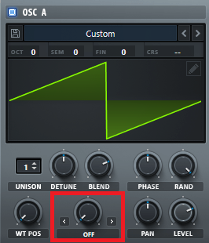
Warp：弯曲、变形。
这个选项的功能对着波形图边调边看很容易就明白了。
官方给出的解释是：
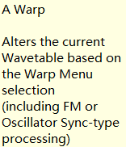
即基于当前的Warp选择调整当前的波形。
我们拿正弦波来举例子（波形选择目录里选择Analog\Basic Shapes，调整WT POS 可以得到几个基础波形）。
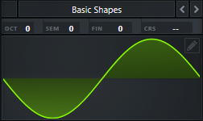
Warp Menu 总览
点击默认的OFF，打开一个目录（即Warp Menu），如图：
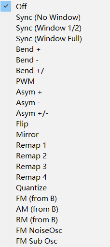
每一个选项都有很有意思的功能，下面一个一个看。
SYNC
SYNC：同步（？）。
调一下旋钮就知道这东西干嘛用的了。
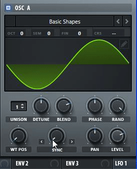
应该不会注意不到波形的变化吧。
很显然，SYNC调的越高，波的周期越小，频率越大，单位时间内出现的同样的波形越多，音调越高。
但要注意，如果用的是正弦波这种连续变化的波形，在调到这种位置的时候：
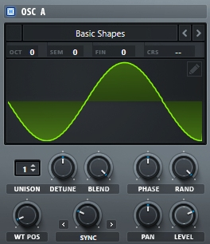
由于右边的波形被截掉了，相当于有一个突变（和锯齿波的那种类似），声音就会夹杂着类似锯齿波的声音，比较刺耳。
但如果用锯齿波来调的话，因为本身就是这种声音，所以除了音调变化听不大出来其他的变化。
SYNC WINDOW
如果不想有刚才的“突变”的问题，可以选择 SYNC WINDOW 这个选项。
这个选项分两种： SYNC 1/2 WIN. 和 SYNC WINDOW。
这个东西就相当于在波形的两侧加上淡入淡出，使声音变得更平滑，不会使连续变化的波形出现突变的情况。
当然如果你用锯齿波的话，当 Warp 的数值低的时候，锯齿波会被柔和成类似正弦波的东西。
SYNC 1/2 WIN. 相当于是淡入淡出更快的 SYNC WINDOW。
SYNC WINDOW：
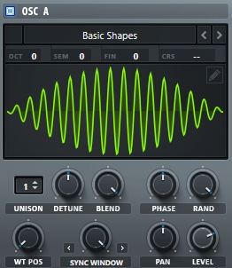
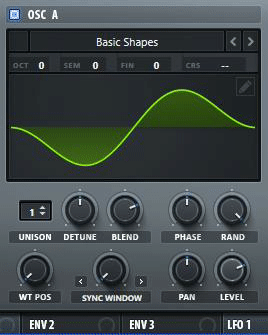
SYNC 1/2 WIN.：
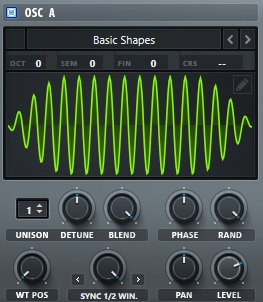
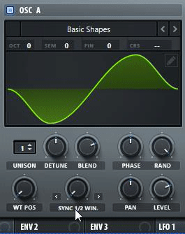
BEND
BEND：弯曲。
BEND +
将波形向内弯曲，效果如下：
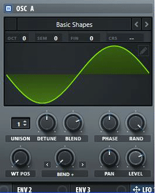
BEND -
将波形向外弯曲，效果如下：
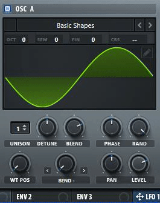
BEND +/-
数值为负时向内弯曲，为正时向外弯曲，效果如下：
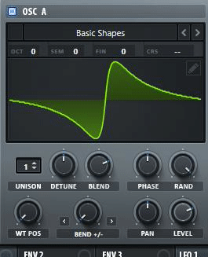
PWM
PWM：脉冲宽度调制（Pulse Width Modulation）。
相当于将波形宽度（即“脉冲宽度”）变窄，效果如下：
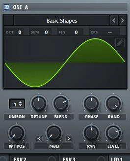
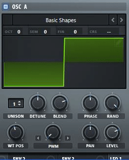
ASYM
ASYM：非对称（即非对称弯曲）。
ASYM 的作用大概就是将波形左右两边分别压缩或拉伸。
ASYM +
将波形左半边压缩，右半边拉伸，效果如下：
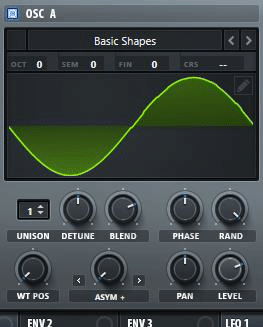
ASYM -
将波形左半边拉伸，右半边压缩，效果如下：
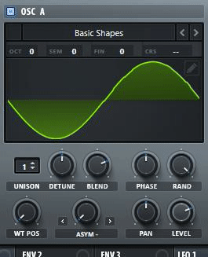
ASYM +/-
数值为负时，将波形左半边压缩，右半边拉伸；数值为正时，将波形左半边拉伸，右半边压缩，效果如下：
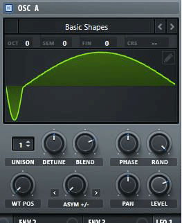
FLIP
FLIP：翻转。
将波形进行上下翻转，效果如下：
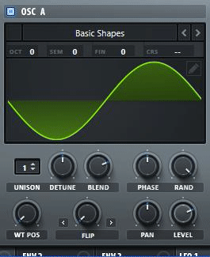
MIRROR
MIRROR：镜像。
相当于将波形先加一个 ASYM +/-，然后再左右镜像一下，效果如下：
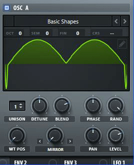
REMAP
REMAP：重映射。
功能如其名，这个 Warp 选项旁边还有一个笔的记号，点开它是一个长得像 LFO 一样的东西，上面写着“Remap Edit”：
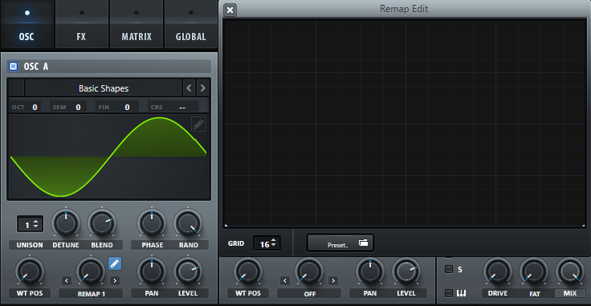
实际上这是个映射函数（我认为），它的作用大概如下。
为了方便说明，我们假设波形是一个函数 ，如图：
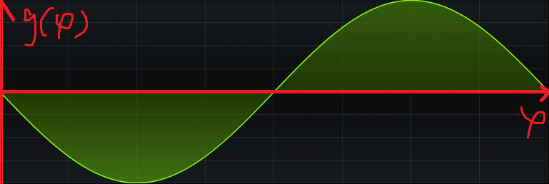
然后这个我们设映射函数为 ，如下：
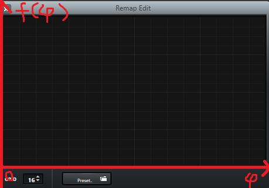
当 REMAP 数值为 100% 时，原来的波形 变成 。也就是说，原来的相位 $ \varphi $ 被映射成 。
当 REMAP 数值在 0% 到 100% 之间时， 会在 到 之间变化。
REMAP 1
普通的 REMAP，效果如下：
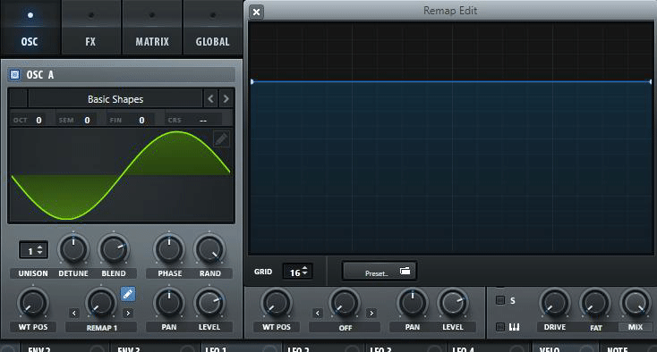
REMAP 2
差不多就是 REMAP 1 + MIRROR，效果如下：
REMAP 3
基于正弦函数的 REMAP，通过 REMAP 3 可以不用花太大功夫在 上，即使你画的映射函数很粗糙，它在波形上引起的变化也会很平滑，效果如下：
REMAP 4
和 REMAP 2 类似，但是原来的波形周期变成四分之一，效果如下：
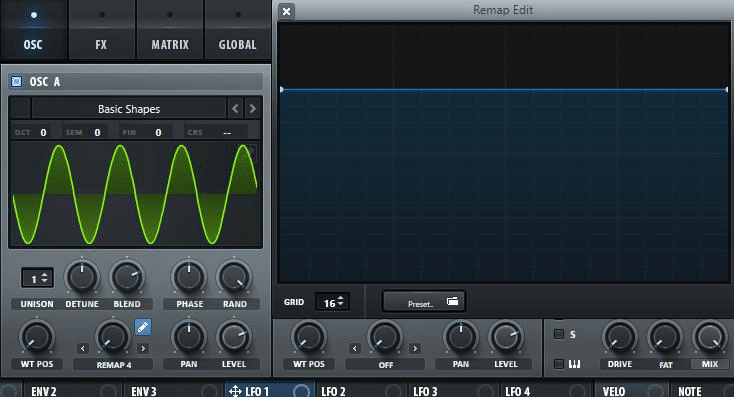
QUANTIZE
QUANTIZE：量化。
就是把波形变方。
FM(FROM B)
以振荡器B（OSC B）的波形来频率调制该振荡器。
AM(FROM B)
以振荡器B（OSC B）的波形来幅度调制该振荡器。
RM(FROM B)
以振荡器B（OSC B）的波形来环形调制该振荡器。
FM(NOISE)
以噪声振荡器的波形来频率调制该振荡器。
FM(SUB)
以低音振荡器的波形来频率调制该振荡器。
结尾
后面部分写得不详细，因为涉及其他地方的知识，以后写到再说（反正也没人看）。
参考：
- B站 @Mask不是马赛克 的文章